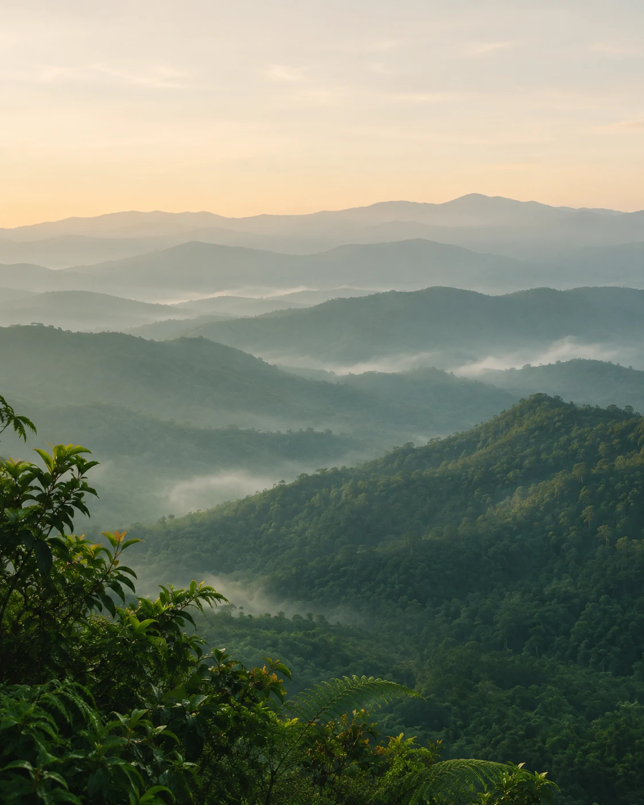

Makassar, IndonesiaTeknologi, cerita, dan langkah baru.

STAY CURIOUS. KEEP EXPLORING.
Selalu ada cerita di setiap langkah.
Visual ilustrasi
Di luar layar, ada dunia untuk dijelajahi.01 — ∞
DIRANGKAI DARI RASA INGIN TAHU
Teknologi✳Cerita✳Perjalanan
01 / TENTANG SAYA
Lebih dari sekadar profil.
Mahasiswa PTIK Universitas Negeri Makassar
Saya Muh. Syarif Hidayatullah, biasa dipanggil Syarif. Berasal dari Makassar, saya menempuh pendidikan di bidang Pendidikan Teknik Informatika dan Komputer, Universitas Negeri Makassar, setelah bersekolah di SMK Negeri 10 Makassar.
Ketertarikan saya pada teknologi tumbuh bersama pengalaman di robotika dan proyek perangkat sederhana. Di luar layar, saya menikmati kegiatan mendaki dan belajar banyak melalui keterlibatan di UKM SAR UNM. Website ini menjadi tempat untuk menyimpan karya, gagasan, dan perjalanan tersebut.
Juara 2 Robot Line Follower Analog. Awal perjalanan mengenal teknologi lewat percobaan.
2021
Kembali mencoba
Juara 3 Robot Line Follower Analog. Melanjutkan ketertarikan pada dunia robotika.
2024
Belajar bersama SAR
Bergabung dengan UKM SAR UNM dan menemukan ruang belajar di luar perkuliahan.
Kini
Membangun & bertumbuh
Mengeksplorasi proyek web dan IoT, sambil mencatat gagasan serta perjalanan pribadi.
02 / PROYEK PILIHAN
Dari ide, menjadi sesuatu yang berarti.
Hal-hal yang sedang saya rancang, pelajari, dan kembangkan.
03 / CATATAN KECIL
Yang dipikirkan. Yang ingin diingat.
Ruang untuk ide, proses belajar, dan cerita di sepanjang jalan.
Draf pembuka
Draf contoh untuk kamu kembangkan dengan pengalaman dan gaya menulismu sendiri.
04 / DI LUAR LAYAR
RUANG UNTUK MENJELAJAH
Sesekali, arahkan pandangan ke luar.
Mendaki adalah salah satu hal yang saya sukai. Bagian ini disiapkan untuk foto dan cerita dari perjalanan, juga potongan keseharian yang ingin disimpan.
✳PERJALANAN MASIH PANJANG
Masih banyak hal untuk dijelajahi.
Terima kasih sudah singgah di ruang kecil saya. Semoga ada ide atau cerita yang bisa kamu bawa pulang.